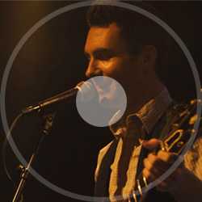

albums
- Lost Stars
- Adam Levine - -
Lost Stars Please, don't see Just a boy caught up in dreams and fantasies Please, see me Reaching out for someone I can't see Take my hand Let's see where we wake up tomorrow Best laid plans Sometimes are just a one night stand I'll be damned Cupid's demanding back his arrow So let's get drunk on our tears And, God, tell us the reason Youth is wasted on the young It's hunting season and the lambs are on the run Searching for meaning But are we all lost stars Trying to light up the dark? Who are we? Just a speck of dust within the galaxy Woe is me If we're not careful turns into reality Don't you dare let our best memories bring you sorrow Yesterday I saw a lion kiss a deer Turn the page Maybe we'll find a brand new ending Where we're dancing in our tears And, God, tell us the reason Youth is wasted on the young It's hunting season And the lambs are on the run Searching for meaning But are we all lost stars Trying to light up the dark? And I thought I saw you out there crying And I thought I heard you call my name And I thought I heard you out there crying Just the same Oh yeah, yeah yeah yeah yeah God, give us the reason Youth is wasted on the young It's hunting season and this lamb is on the run Searching for meaning But are we all lost stars Trying to light up the dark? And I thought I saw you out there crying And I thought I heard you call my name And I thought I heard you out there crying But are we all lost stars Trying to light up the dark? But are we all lost stars Trying to light up the dark?
click
- No One Else..
- Adam Levine - -
no one else like you Is everything just right Don't want you thinking that I'm in a hurry I won't stay afraid I have this vision and it's got me worried 'Cause everyone wants someone That's one cliché that's true The sad truth's I want no one Unless that someone's you It looks like you Feels like you Smiles like you I want someone just like you Through and through I'm forever blue 'Cause there's no one else like I hope that you're not mad You always said you want a man of action I'm not the hottest lad, no There's more to life than physical attraction You got your special someone But between me and him, guess who Will spend their whole life waiting For someone just like you That looks like you That feels like you That smiles like you I need someone just like you Love me true I'm forever blue 'Cause there's no one else like Woo, woah, woo-hoo I want you in my arms I see you in my dreams I'm gonna make you mine As crazy as it seems Girl, you, yes you I need someone just like you Love me true I'm forever blue Because there's no one else There's no one else There's no one else There's no one else There's no one else There's no one else There's no one else I need 'Cause you're so fine You're so fine 'Cause you're so fine You're so fine Cause you're so fine You're so fine 'Cause you're so fine You're so fine 'Cause you're so fine You're so fine
click
- A Higher Place
- Adam Levine - -
A Higher Place I don't know why I don't see happiness in this town Everyone I meet seems so uptight wearing their frown What good's living where dreams come true if nobody smiles? Everyone's chasing the latest star, the latest style You take me to another space in time You take me to a higher place So I'm, I'm about to get out of the race I don't mind You ought to know that everything's nothing if I don't have you I don't know if I'm the fool who's getting this all wrong That's the dream to sing, the perfect girl, the perfect song All I know is I can't keep on wearing this disguise When you're the only one that sees what's real in my eyes You take me to another space in time You take me to a higher place So I'm, I'm about to get out of the race I don't mind You ought to know that everything's nothing if I don't have you You take me to another place You take me to another place You take me to a higher place Oh, yeah You take me to another space in time You take me to a higher place So I'm, I'm about to get out of the race I don't mind You ought to know that everything's nothing if I don't have you So I'm about to get out of the race I don't mind You ought to know that everything's nothing if I don't have you
 click
click
- Tell Me If'u.
- Keira Knightley - -
tell me if you wanna go home Oh maybe You don't have to kill so kind Pretend to ease my mind When baby you won't Oh sugar You don't have to be so sweet I know who you're going to meet Don't say that I don't So maybe I won't let your memory haunt me I'll be sleepwalking With the lonely If you're taking me home Tell me if I'm back on my own Giving back a heart that's on loan Just tell me if you wanna go home Tell me if you wanna go home ('cause I'm just not sure) Tell me if I'm back on my own (how to get back there) Giving back a heart that's on loan (and I just can't bear) Tell me if you wanna go home (if you're not there) Oh, oh, oh, oh, baby If you're taking me home Tell me if I'm back on my own Giving back a heart that's on loan Tell me if you wanna go Wanna go, wanna go, wanna go, wanna 'Cause I'm just not sure How to get back there And I just can't bear If you're not there If you're taking me home('cause I'm just not sure) Tell me if I'm back on my own (how to get back there) Giving back a heart that's on loan (and I just can't bear) Just tell me if you wanna go home
 click
- Like A Fool
- Keira Knightley - -
Like A Fool We take a chance from time to time And put our necks out on the line And you have broken every promise that we made And I have loved you anyway Took a fine time to leave me hangin' out to dry Understand now I'm greivin' so don't you waste my time 'Cause you have taken all the wind out from my sails And I have loved you just the same We finally find this then you're gone Been chasin' rainbows all along And you have cursed me when there's no one left to blame And I have loved you just the same And you have broken every single fuckin' rule And I have loved you like a fool We take a chance from time to time And put our necks out on the line And you have broken every promise that we made And I have loved you anyway Took a fine time to leave me hangin' out to dry Understand now I'm greivin' so don't you waste my time 'Cause you have taken all the wind out from my sails And I have loved you just the same We finally find this then you're gone Been chasin' rainbows all along And you have cursed me when there's no one left to blame And I have loved you just the same And you have broken every single fuckin' rule And I have loved you like a fool
 click
click
- You Can't.
- Keira Knightley - -
You Can't Take Back So you find yourself at this subway When your world in a bag by your side And all at once it seemed like a good way You realized its the end of your life For what it's worth Here comes the train upon the track And there goes the pain it cuts to black Are you ready for the last act? To take a step you can't take back Take in all the punches you could take Took 'em all right on your chest Now the countless back is breaking Again, again For what it's worth Here comes the train upon the track And there goes the pain it cuts to black Are you ready for the last act? To take a step you can't take back Did she love you? Did she take you down? Was she on her knees when she kissed your crown? Tell me what you found Here comes the rain, so hold your hat And don't pray to God, cause He won't talk back Are you ready for the last act? To take a step you can't take back Back, back, back You can't take back Back, back, back So you find yourself at this subway When your world in a bag by your side
 click
click